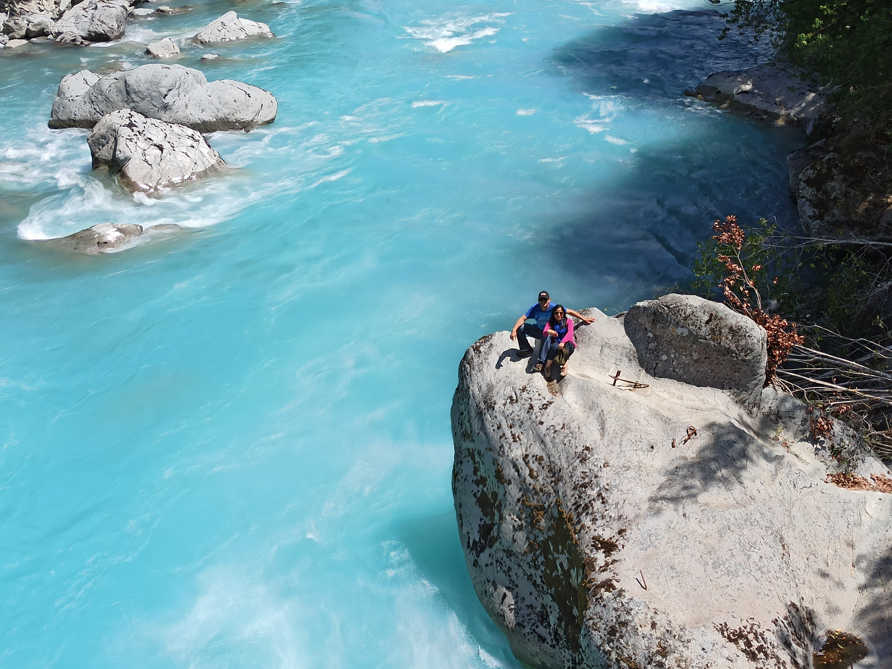
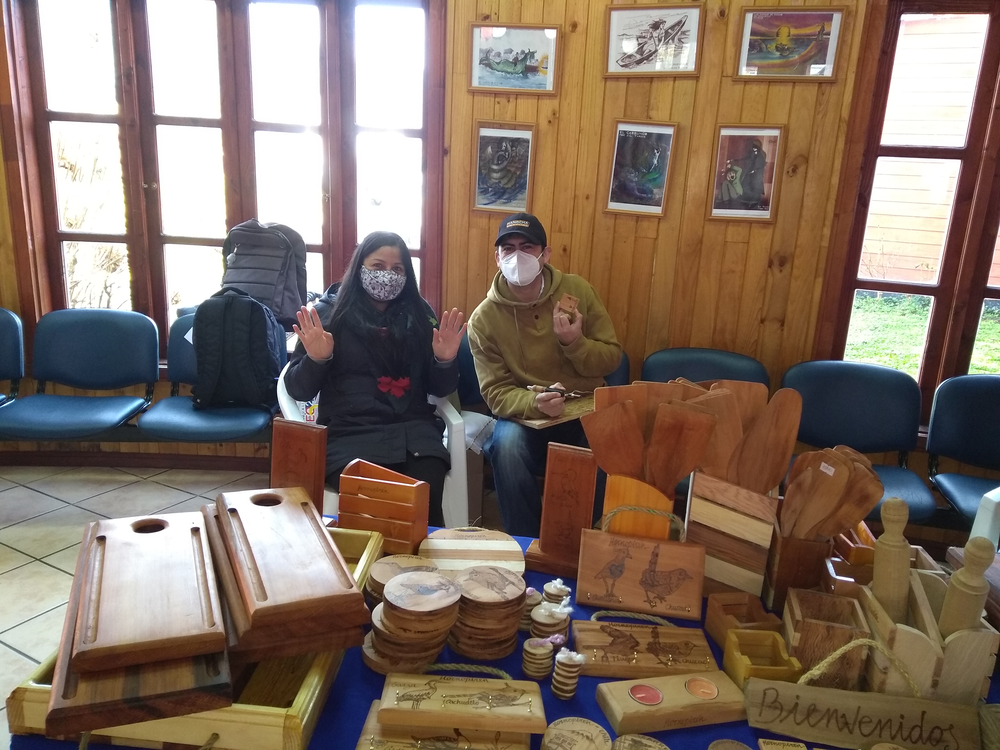
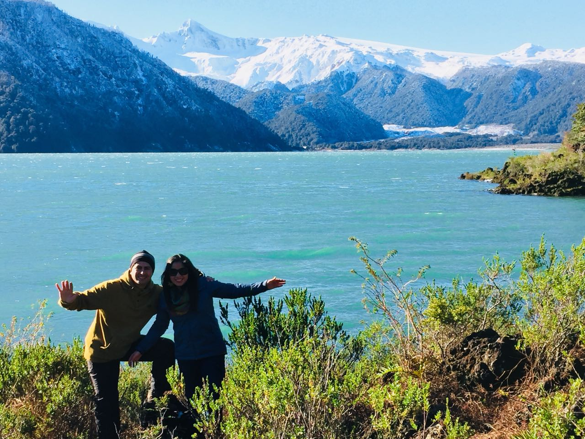
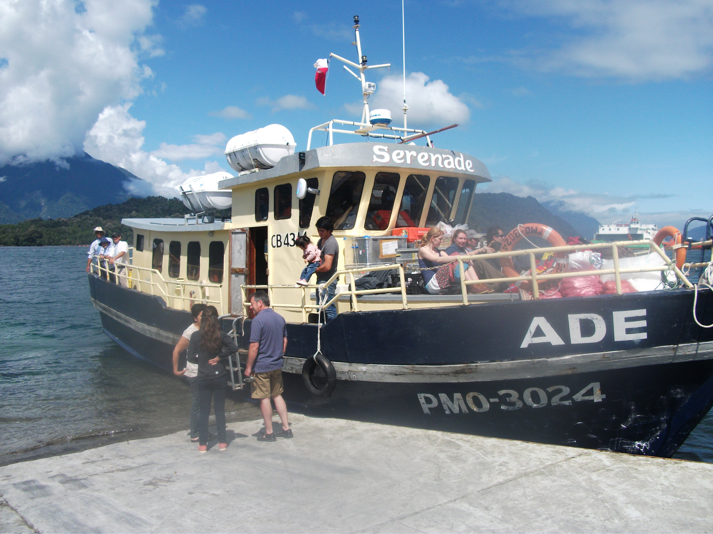
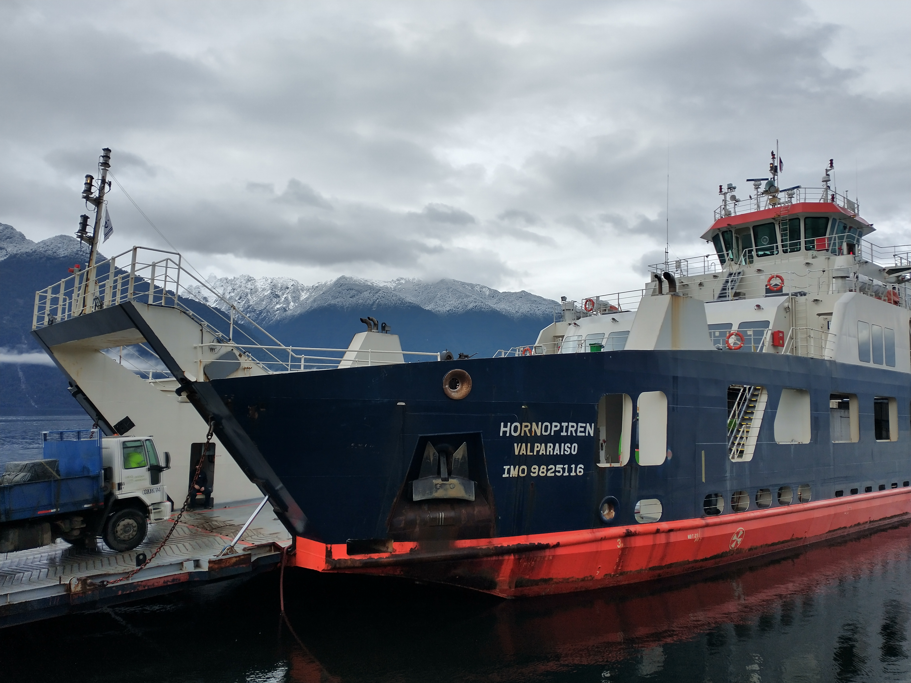

Qué encontrarás en Hornopirén

Artesanías del lugar
Dentro de la comuna hay varios artesanos que trabajan en madera de alerce, lana, y otros materiales

Caminatas
Hay variedad de caminatas en las que puedes descubrir el paisaje de Hornopirén, entre ellas estan hacia cascadas, lagos, volcanes,etc

Actividades
Puedes disfrutar de actividades como kayak, rafting, paracaidismo, paseos en bote, etc
Información Importante

Centro al Visitante
Al llegar puedes recibir mas información y mapas de la comuna

Rampa
Dentro de la comuna hay varios servicios de lanchas

Barcaza hacia Chaitén
Somarco es la empresa a cargo de los traslados
Preguntas Frecuentes
Sí. Dentro de la ciudad hay variados servicios para rentar
bicicletas y automóviles. Hay un banco estado y un cajero del banco BCI. Hay varias ofertas
de cabañas y hoteles.
Sí. Dentro de la ciudad hay variados servicios para rentar
bicicletas y automóviles.
Hay actividades para todos los intereses. Paseos, tours, rafting,
parapente, etc.